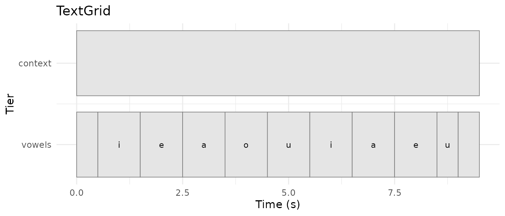
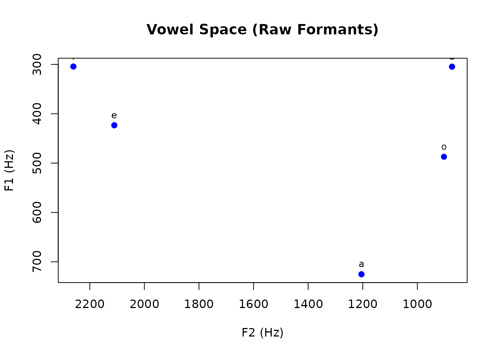
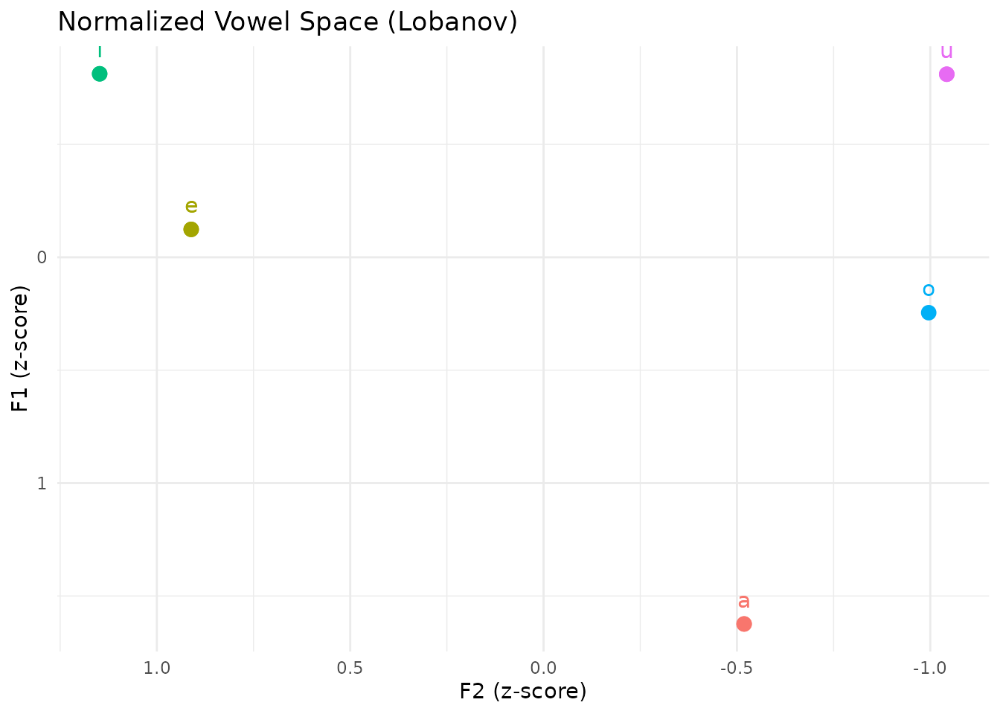
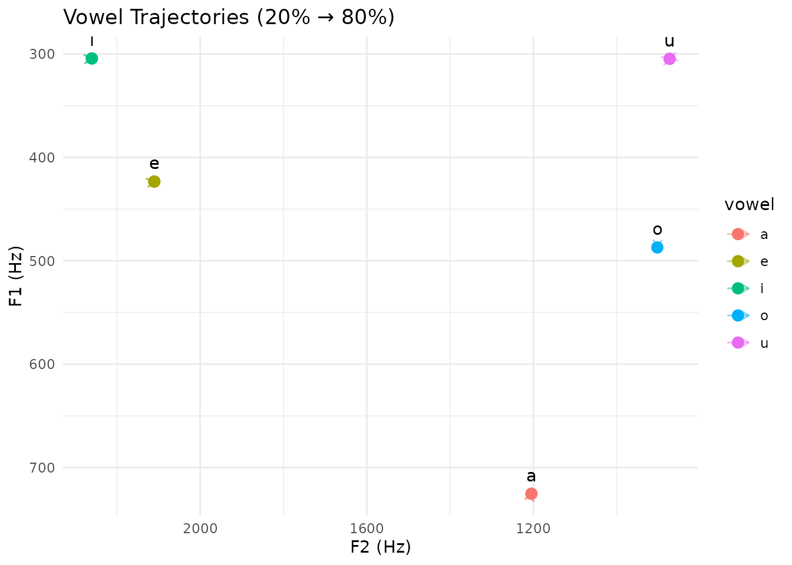
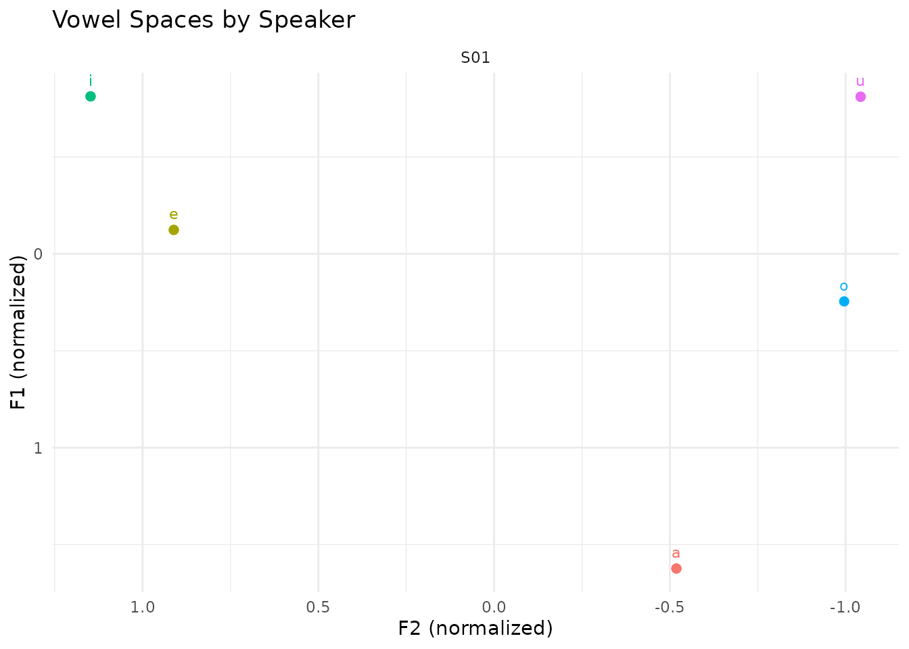

Vowel Space Analysis with pladdrr
pladdrr Package Authors
2026-08-17
Source:vignettes/vowel-space-analysis.Rmd
vowel-space-analysis.RmdOverview
This vignette demonstrates a vowel acoustics research workflow using the pladdrr package. Topics covered:
- Formant extraction with optimal parameters
- Multi-point measurements (onset, midpoint, offset)
- Formant normalization (Lobanov z-score method)
- Vowel space statistics and area calculations
- F1-F2 plotting preparation
- Integration with ggplot2 for publication-quality graphics
This workflow is used in sociolinguistic variation studies, L2 acquisition research, and dialectology.
Note: For comprehensive visualization examples
including additional plot types (spectrograms, voice quality reports,
cepstral analysis), see vignette("visualization").
Background
Vowel Acoustics
Vowels are characterized acoustically by their formants - resonance frequencies of the vocal tract:
-
F1 (First formant): Correlates with tongue height
(inverse)
- High vowels (i, u): Low F1 (~280-300 Hz)
- Low vowels (a): High F1 (~700 Hz)
-
F2 (Second formant): Correlates with tongue
backness (inverse)
- Front vowels (i, e): High F2 (~2000-2250 Hz)
- Back vowels (u, o): Low F2 (~800-900 Hz)
- F3 (Third formant): Useful for rhoticity and speaker normalization
The F1-F2 Vowel Space
Vowels are visualized in acoustic space:
- X-axis: F2 (typically reversed, high values on left)
- Y-axis: F1 (typically reversed, low values at top)
- This mirrors the articulatory vowel quadrilateral
Formant Normalization
Speaker-intrinsic differences (vocal tract length, physiology) require normalization for comparison:
-
Lobanov z-scores: Standardize formants within
speaker
- z = (F - mean_F) / sd_F
- Mean-centers and scales to unit variance
- Preserves vowel space structure
- Other methods: Bark difference, Nearey, Watt & Fabricius
Part 1: Data Preparation
Loading Audio and Annotations
For this demonstration we synthesize each vowel token with
klattgrid_create_from_vowel(), using typical American
English formant targets, rather than loading a recording. In real
research, load an actual recording with
Sound$new("path/to/recording.wav") and its annotation with
TextGrid$new("path/to/recording.TextGrid"). The package
ships one example pair for experimentation:
system.file("extdata", "test.wav", package = "pladdrr") and
system.file("extdata", "test.TextGrid", package = "pladdrr").
library(pladdrr)
#> pladdrr: direct access to Praat's core algorithms from R.
#> See ?pladdrr for an overview, or citation("pladdrr") for citation details.
library(ggplot2)
sampling_rate <- 44100
# Define vowel segments (start, end, label, word context)
vowel_segments <- data.frame(
start = c(0.5, 1.5, 2.5, 3.5, 4.5, 5.5, 6.5, 7.5, 8.5),
end = c(1.0, 2.0, 3.0, 4.0, 5.0, 6.0, 7.0, 8.0, 9.0),
vowel = c("i", "e", "a", "o", "u", "i", "a", "e", "u"),
word = c("beet", "bait", "bat", "boat", "boot", "beat", "father", "bet", "boot"),
stringsAsFactors = FALSE
)
# Approximate formant targets (Hz) used only to synthesize distinguishable
# demonstration tokens
vowel_targets <- list(
i = c(f1 = 280, f2 = 2250, f3 = 3000),
e = c(f1 = 400, f2 = 2100, f3 = 2700),
a = c(f1 = 700, f2 = 1200, f3 = 2600),
o = c(f1 = 500, f2 = 900, f3 = 2600),
u = c(f1 = 300, f2 = 850, f3 = 2500)
)
make_silence <- function(duration) {
Sound$from_values(rep(0, round(duration * sampling_rate)), sampling_rate = sampling_rate)
}
# Build a single Sound by concatenating silence and synthesized vowels so
# that the segment times in vowel_segments line up with the audio
parts <- list(make_silence(vowel_segments$start[1]))
for (i in seq_len(nrow(vowel_segments))) {
target <- vowel_targets[[vowel_segments$vowel[i]]]
duration <- vowel_segments$end[i] - vowel_segments$start[i]
kg <- klattgrid_create_from_vowel(
duration = duration, f0start = 150,
f1 = unname(target["f1"]), b1 = 50,
f2 = unname(target["f2"]), b2 = 100,
f3 = unname(target["f3"]), b3 = 150
)
parts[[length(parts) + 1]] <- kg$to_sound()
gap <- if (i < nrow(vowel_segments)) {
vowel_segments$start[i + 1] - vowel_segments$end[i]
} else {
0.5
}
parts[[length(parts) + 1]] <- make_silence(gap)
}
sound <- parts[[1]]
for (i in 2:length(parts)) {
sound <- sound$concatenate(parts[[i]])
}
# Create TextGrid with vowel annotations
tg <- TextGrid$create(
tmin = 0,
tmax = sound$get_total_duration(),
tier_names = "vowels context",
point_tiers = "" # Both are interval tiers
)
# Add boundaries and labels
for (i in 1:nrow(vowel_segments)) {
tg$insert_boundary(1, vowel_segments$start[i])
}
tg$insert_boundary(1, vowel_segments$end[nrow(vowel_segments)])
for (i in 1:nrow(vowel_segments)) {
tg$set_interval_text(1, i + 1, vowel_segments$vowel[i])
}
cat("Prepared", nrow(vowel_segments), "vowel tokens\n")
#> Prepared 9 vowel tokensThe autoplot()/autolayer() methods for
TextGrid (see vignette("autoplot-autolayer"))
give a quick view of the annotation tier:
autoplot(tg)
Part 2: Formant Extraction
Choosing Analysis Parameters
Formant analysis parameters must match speaker characteristics:
# Parameter guidelines:
# Adult male: max_formant = 5000 Hz
# Adult female: max_formant = 5500 Hz
# Child: max_formant = 8000 Hz
# For this example (adult female):
max_formant <- 5500
time_step <- 0.01
window_length <- 0.025
pre_emphasis <- 50Pre-emphasis
Apply pre-emphasis to boost higher frequencies before formant analysis:
# Note: pre_emphasize modifies sound in-place, so we skip for demonstration
# sound$pre_emphasize(from_frequency = pre_emphasis)Extract Formants
Use Burg’s algorithm (Praat’s default):
# Extract formants from the original sound
formant <- sound$to_formant_burg(
time_step = time_step,
max_formants = 5,
max_frequency = max_formant,
window_length = window_length,
pre_emphasis_from = pre_emphasis
)
cat("Formant object created\n")
#> Formant object created
cat("Time step:", time_step, "s\n")
#> Time step: 0.01 s
cat("Maximum formant:", max_formant, "Hz\n")
#> Maximum formant: 5500 HzPart 3: Multi-Point Measurements
Measure formants at three time points per vowel:
- 20% into vowel (onset, after coarticulation)
- 50% (midpoint, most stable)
- 80% (offset, before coarticulation)
This captures vowel trajectories and diphthongization.
# Initialize results data frame
vowel_features <- data.frame(
vowel = character(),
word = character(),
start = numeric(),
end = numeric(),
duration = numeric(),
f1_20 = numeric(),
f2_20 = numeric(),
f3_20 = numeric(),
f1_50 = numeric(),
f2_50 = numeric(),
f3_50 = numeric(),
f1_80 = numeric(),
f2_80 = numeric(),
f3_80 = numeric(),
stringsAsFactors = FALSE
)
# Measure formants for each vowel
for (i in 1:nrow(vowel_segments)) {
start <- vowel_segments$start[i]
end <- vowel_segments$end[i]
duration <- end - start
# Calculate time points
t_20 <- start + 0.20 * duration
t_50 <- start + 0.50 * duration
t_80 <- start + 0.80 * duration
# Measure formants at each time point
measure_formants <- function(time) {
c(
f1 = formant$get_value_at_time(1, time, "hertz"),
f2 = formant$get_value_at_time(2, time, "hertz"),
f3 = formant$get_value_at_time(3, time, "hertz")
)
}
f_20 <- measure_formants(t_20)
f_50 <- measure_formants(t_50)
f_80 <- measure_formants(t_80)
# Add to results
vowel_features <- rbind(vowel_features, data.frame(
vowel = vowel_segments$vowel[i],
word = vowel_segments$word[i],
start = start,
end = end,
duration = duration,
f1_20 = f_20["f1"],
f2_20 = f_20["f2"],
f3_20 = f_20["f3"],
f1_50 = f_50["f1"],
f2_50 = f_50["f2"],
f3_50 = f_50["f3"],
f1_80 = f_80["f1"],
f2_80 = f_80["f2"],
f3_80 = f_80["f3"]
))
}
print(vowel_features)
#> vowel word start end duration f1_20 f2_20 f3_20 f1_50
#> f1 i beet 0.5 1 0.5 304.2825 2260.0171 3035.761 304.3400
#> f11 e bait 1.5 2 0.5 422.9372 2110.0704 2731.320 423.3906
#> f12 a bat 2.5 3 0.5 724.9220 1204.7395 2631.500 725.2976
#> f13 o boat 3.5 4 0.5 487.1170 902.4938 2632.282 487.1288
#> f14 u boot 4.5 5 0.5 304.6455 872.8370 2543.082 304.6590
#> f15 i beat 5.5 6 0.5 304.2825 2260.0155 3035.757 304.3400
#> f16 a father 6.5 7 0.5 724.9210 1204.7388 2631.495 725.2969
#> f17 e bet 7.5 8 0.5 422.9372 2110.0697 2731.318 423.3905
#> f18 u boot 8.5 9 0.5 304.6464 872.8440 2543.122 304.6596
#> f2_50 f3_50 f1_80 f2_80 f3_80
#> f1 2260.0977 3035.876 304.2825 2260.0168 3035.760
#> f11 2110.1787 2731.423 422.9370 2110.0681 2731.315
#> f12 1204.7535 2631.590 724.9211 1204.7389 2631.495
#> f13 902.4855 2632.370 487.1180 902.4939 2632.290
#> f14 872.8936 2543.196 304.6456 872.8379 2543.087
#> f15 2260.0961 3035.872 304.2825 2260.0151 3035.756
#> f16 1204.7529 2631.586 724.9207 1204.7385 2631.493
#> f17 2110.1779 2731.421 422.9369 2110.0674 2731.313
#> f18 872.8984 2543.223 304.6459 872.8406 2543.102Part 4: Formant Normalization
Lobanov Z-Score Method
Normalize formants to remove speaker-specific variation:
# Function to compute Lobanov z-scores
lobanov_normalize <- function(formant_values) {
(formant_values - mean(formant_values, na.rm = TRUE)) /
sd(formant_values, na.rm = TRUE)
}
# Normalize F1 and F2 at midpoint (50%)
vowel_features$f1_norm <- lobanov_normalize(vowel_features$f1_50)
vowel_features$f2_norm <- lobanov_normalize(vowel_features$f2_50)
# Also normalize F3 for completeness
vowel_features$f3_norm <- lobanov_normalize(vowel_features$f3_50)
cat("Applied Lobanov normalization\n")
#> Applied Lobanov normalization
cat("F1_norm: mean =", round(mean(vowel_features$f1_norm), 2),
", SD =", round(sd(vowel_features$f1_norm), 2), "\n")
#> F1_norm: mean = 0 , SD = 1
cat("F2_norm: mean =", round(mean(vowel_features$f2_norm), 2),
", SD =", round(sd(vowel_features$f2_norm), 2), "\n")
#> F2_norm: mean = 0 , SD = 1Part 5: Vowel Space Statistics
Descriptive Statistics by Vowel
# Aggregate by vowel type
vowel_stats <- aggregate(
cbind(f1_50, f2_50, f1_norm, f2_norm) ~ vowel,
data = vowel_features,
FUN = function(x) c(mean = mean(x, na.rm = TRUE),
sd = sd(x, na.rm = TRUE))
)
print(vowel_stats)
#> vowel f1_50.mean f1_50.sd f2_50.mean f2_50.sd f1_norm.mean
#> 1 a 7.252973e+02 5.435158e-04 1.204753e+03 3.880091e-04 1.623955e+00
#> 2 e 4.233906e+02 4.791206e-05 2.110178e+03 4.996400e-04 -1.234687e-01
#> 3 i 3.043400e+02 3.478289e-05 2.260097e+03 1.164839e-03 -8.125284e-01
#> 4 o 4.871288e+02 NA 9.024855e+02 NA 2.454455e-01
#> 5 u 3.046593e+02 4.420004e-04 8.728960e+02 3.378245e-03 -8.106803e-01
#> f1_norm.sd f2_norm.mean f2_norm.sd
#> 1 3.145847e-06 -5.185803e-01 6.127189e-07
#> 2 2.773130e-07 9.112086e-01 7.889993e-07
#> 3 2.013219e-07 1.147950e+00 1.839439e-06
#> 4 NA -9.959020e-01 NA
#> 5 2.558280e-06 -1.042628e+00 5.334706e-06Vowel Space Area
Calculate vowel space area using the convex hull of F1-F2 points:
# Use normalized values for comparison across speakers
f1_coords <- vowel_features$f1_norm
f2_coords <- vowel_features$f2_norm
# Compute convex hull
hull_indices <- chull(f2_coords, f1_coords)
hull_points <- cbind(f2_coords[hull_indices], f1_coords[hull_indices])
# Calculate area using shoelace formula
shoelace_area <- function(x, y) {
n <- length(x)
area <- 0
for (i in 1:(n-1)) {
area <- area + (x[i] * y[i+1] - x[i+1] * y[i])
}
area <- area + (x[n] * y[1] - x[1] * y[n])
abs(area) / 2
}
vowel_space_area <- shoelace_area(hull_points[,1], hull_points[,2])
cat("Vowel space area (normalized):", round(vowel_space_area, 2), "square units\n")
#> Vowel space area (normalized): 3.17 square unitsLarger vowel space area indicates: - Greater vowel dispersion (clearer articulation) - Useful for comparing clear vs. casual speech - Developmental changes (child vs. adult) - Clinical applications (dysarthria assessment)
Part 6: Trajectory Analysis
Detect Diphthongization
Compare onset (20%) and offset (80%) formants:
# Calculate formant movement
vowel_features$f1_movement <- abs(vowel_features$f1_80 - vowel_features$f1_20)
vowel_features$f2_movement <- abs(vowel_features$f2_80 - vowel_features$f2_20)
# Euclidean distance in F1-F2 space
vowel_features$trajectory_length <- sqrt(
vowel_features$f1_movement^2 + vowel_features$f2_movement^2
)
# Identify potential diphthongs (large trajectory)
diphthong_threshold <- median(vowel_features$trajectory_length, na.rm = TRUE) * 1.5
potential_diphthongs <- vowel_features$vowel[
vowel_features$trajectory_length > diphthong_threshold
]
cat("Potential diphthongs (large F1-F2 movement):\n")
#> Potential diphthongs (large F1-F2 movement):
cat(paste(unique(potential_diphthongs), collapse = ", "), "\n")
#> e, uPart 7: Visualization
Basic F1-F2 Vowel Plot
# Using base R graphics
plot(
vowel_features$f2_50,
vowel_features$f1_50,
xlim = rev(range(vowel_features$f2_50, na.rm = TRUE)), # Reverse F2
ylim = rev(range(vowel_features$f1_50, na.rm = TRUE)), # Reverse F1
xlab = "F2 (Hz)",
ylab = "F1 (Hz)",
main = "Vowel Space (Raw Formants)",
pch = 19,
col = "blue"
)
text(
vowel_features$f2_50,
vowel_features$f1_50,
labels = vowel_features$vowel,
pos = 3,
cex = 0.8
)
Advanced Plotting with ggplot2
library(ggplot2)
# Normalized vowel space
ggplot(vowel_features, aes(x = f2_norm, y = f1_norm, label = vowel, color = vowel)) +
geom_point(size = 3) +
geom_text(vjust = -1, size = 4) +
scale_x_reverse() +
scale_y_reverse() +
labs(
title = "Normalized Vowel Space (Lobanov)",
x = "F2 (z-score)",
y = "F1 (z-score)"
) +
theme_minimal() +
theme(legend.position = "none")
# With trajectories
ggplot(vowel_features) +
geom_segment(aes(x = f2_20, y = f1_20, xend = f2_80, yend = f1_80, color = vowel),
arrow = arrow(length = unit(0.2, "cm")), alpha = 0.5) +
geom_point(aes(x = f2_50, y = f1_50, color = vowel), size = 3) +
geom_text(aes(x = f2_50, y = f1_50, label = vowel), vjust = -1) +
scale_x_reverse() +
scale_y_reverse() +
labs(
title = "Vowel Trajectories (20% -> 80%)",
x = "F2 (Hz)",
y = "F1 (Hz)"
) +
theme_minimal()
Faceted by Speaker or Condition
# With multi-speaker data you would already have a speaker column. The demo
# data above comes from a single synthesised talker, so label it as such to
# show the faceting call working.
vowel_features$speaker <- "S01"
ggplot(vowel_features, aes(x = f2_norm, y = f1_norm, label = vowel, color = vowel)) +
geom_point(size = 2) +
geom_text(vjust = -1, size = 3) +
facet_wrap(~ speaker, ncol = 3) +
scale_x_reverse() +
scale_y_reverse() +
labs(
title = "Vowel Spaces by Speaker",
x = "F2 (normalized)",
y = "F1 (normalized)"
) +
theme_minimal() +
theme(legend.position = "none")
Part 8: Statistical Analysis
ANOVA: Vowel Differences
# Test if vowels differ in F1
f1_model <- aov(f1_50 ~ vowel, data = vowel_features)
summary(f1_model)
#> Df Sum Sq Mean Sq F value Pr(>F)
#> vowel 4 238803 59701 4.831e+11 <2e-16 ***
#> Residuals 4 0 0
#> ---
#> Signif. codes: 0 '***' 0.001 '**' 0.01 '*' 0.05 '.' 0.1 ' ' 1
# Post-hoc pairwise comparisons
TukeyHSD(f1_model)
#> Tukey multiple comparisons of means
#> 95% family-wise confidence level
#>
#> Fit: aov(formula = f1_50 ~ vowel, data = vowel_features)
#>
#> $vowel
#> diff lwr upr p adj
#> e-a -301.9067015 -301.9082643 -301.905139 0
#> i-a -420.9572658 -420.9588286 -420.955703 0
#> o-a -238.1684798 -238.1703937 -238.166566 0
#> u-a -420.6379775 -420.6395403 -420.636415 0
#> i-e -119.0505643 -119.0521271 -119.049002 0
#> o-e 63.7382217 63.7363078 63.740136 0
#> u-e -118.7312760 -118.7328388 -118.729713 0
#> o-i 182.7887861 182.7868721 182.790700 0
#> u-i 0.3192883 0.3177256 0.320851 0
#> u-o -182.4694978 -182.4714117 -182.467584 0Mixed-Effects Models
For multi-speaker data with repeated measures, add a
speaker column and fit a random intercept (requires the
lme4 package, not a pladdrr dependency):
# Not evaluated here: lme4 is not a pladdrr dependency, and a random intercept
# needs genuine repeated measures across several speakers, which the synthetic
# single-talker demo data above does not have.
library(lme4)
model <- lmer(f1_50 ~ vowel + (1 | speaker), data = vowel_features)
summary(model)Real-World Applications
1. Sociolinguistic Variation
Compare vowel systems across dialects:
# Load data from multiple dialect regions
northeast <- load_vowels("northeast_speakers/*.wav")
south <- load_vowels("south_speakers/*.wav")
# Combine and analyze
all_data <- rbind(
transform(northeast, dialect = "Northeast"),
transform(south, dialect = "South")
)
# Statistical test
model <- lm(f1_norm ~ vowel * dialect, data = all_data)2. L2 Acquisition
Track vowel learning over time:
# Longitudinal data (same learner, multiple sessions)
learner_data$session <- as.factor(learner_data$session)
# Test for improvement
model <- lmer(
trajectory_length ~ session * vowel + (1 | learner_id),
data = learner_data
)
# Expect decreasing trajectory (more monophthongal)3. Speech Clarity Assessment
Compare clear vs. conversational speech:
# Calculate vowel space area for each style
clear_area <- compute_vowel_space_area(clear_speech_data)
casual_area <- compute_vowel_space_area(casual_speech_data)
# Typically: clear_area > casual_area
cat("Clear speech area:", clear_area, "\n")
cat("Casual speech area:", casual_area, "\n")
cat("Expansion ratio:", clear_area / casual_area, "\n")Best Practices
1. Parameter Selection
Formant ceiling (most critical parameter):
- Too high: Spurious formants, misidentifications
- Too low: Missing formants, tracking failures
- Test with known tokens and adjust iteratively
# Test multiple ceilings
ceilings <- c(5000, 5500, 6000, 6500)
for (ceiling in ceilings) {
formant <- sound$to_formant_burg(
time_step = time_step,
max_formants = 5,
max_frequency = ceiling,
window_length = window_length,
pre_emphasis_from = pre_emphasis
)
# Manually check F1-F2 values for sanity
}2. Quality Control
Check for outliers and tracking errors:
# Flag extreme values
f1_outliers <- vowel_features$f1_50 > 1000 | vowel_features$f1_50 < 200
f2_outliers <- vowel_features$f2_50 > 3000 | vowel_features$f2_50 < 500
cat("Potential tracking errors:", sum(f1_outliers | f2_outliers), "\n")
#> Potential tracking errors: 0
# Manual review or retrack with different parameters3. Normalization Choice
Select normalization based on research question:
| Method | Use Case |
|---|---|
| Lobanov | General purpose, preserves dispersion |
| Bark difference | Perceptual scaling |
| Nearey | Minimizes formant-specific biases |
| Watt & Fabricius | No within-speaker variation data needed |
4. Missing Data
Handle tracking failures gracefully:
# Remove rows with missing formants
vowel_features_clean <- vowel_features[
complete.cases(vowel_features[, c("f1_50", "f2_50")]),
]
# Or impute using formant tracking refinement
# (see Praat's "Track formants" for advanced methods)Summary
This vignette covered a vowel acoustics workflow built on pladdrr:
- Formant extraction with
to_formant_burg()(Praat’s Burg algorithm) - Multi-point measurement (onset/midpoint/offset) for trajectory analysis
- Lobanov z-score normalization, implemented in R (not a pladdrr function)
- Vowel space area via convex hull (
chull()) and the shoelace formula, implemented in R - ggplot2-based plotting of the resulting data frame, plus
autoplot()/autolayer()for theTextGridannotation tier
For related workflows, see:
-
vignette("integrated-phonetic-analysis")- TextGrid-guided analysis -
vignette("textgrid-workflows")- Advanced annotation techniques -
inst/examples/09_vowel_space_analysis.R- Full executable script
References
- Lobanov, B. M. (1971). Classification of Russian vowels spoken by different speakers. The Journal of the Acoustical Society of America, 49(2B), 606-608.
- Thomas, E. R., & Kendall, T. (2007). NORM: The vowel normalization and plotting suite.
- Boersma, P., & Weenink, D. (2023). Praat: doing phonetics by computer. https://praat.org/
- Nearey, T. M. (1978). Phonetic feature systems for vowels. Indiana University Linguistics Club.